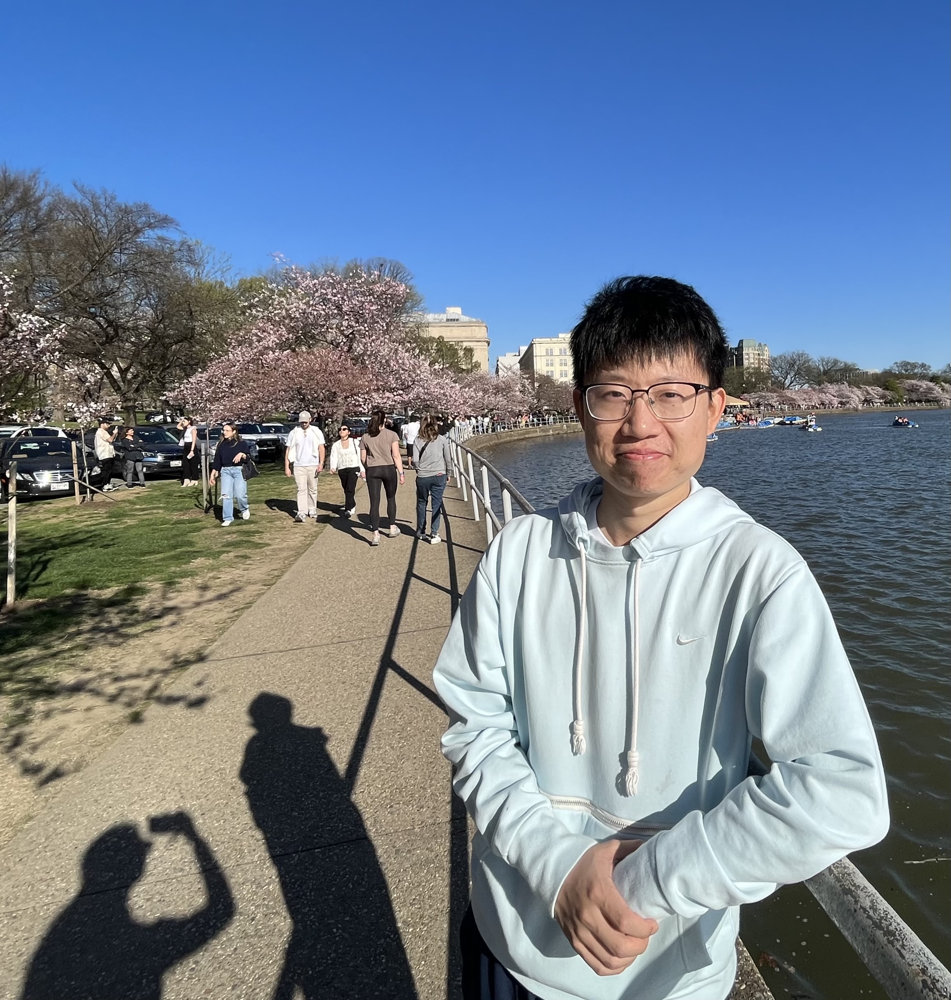

|
Junwei Deng - 邓珺玮
📚️ Second-year Ph.D. Student in Information Sciences @UIUC.
🔬 My advisor is Prof. Jiaqi Ma.
👨🏽💻 AI Frameworks Engineer @Intel, 2020-2023.
🏫 M.S. in Information @Umich, 2019-2021.
🏫 B.S. in Electrical and Computer Engineering @SJTU, 2016-2020.
🏡 Now I live in Champaign, Illinois.
💡 I am interested in Data-Centric AI (e.g., data attribution); Trustworthy ML (e.g., robustness, fairness); Developing technical solutions for operationalizing regulatory principles (e.g., copyright issue for generative AI).
📧 junweid2 AT illinois DOT edu
Google Scholar /
GitHub /
CV
📢 I am actively looking for research internship opportunity for 2025 and beyond. Please contact me if you have any information or opportunities!
|

|
Selected Papers
(* Equal Contribution)
Preprint
- A Versatile Influence Function for Data Attribution with Non-Decomposable Loss.
Junwei Deng, Weijing Tang, Jiaqi W. Ma
Preprint.
[ArXiv]
- Efficient Ensembles Improve Training Data Attribution.
Junwei Deng*, Ting-Wei Li*, Shichang Zhang, Jiaqi W. Ma
Preprint.
[ArXiv]
- Computational Copyright: Towards A Royalty Model for Music Generative AI.
Junwei Deng, Shiyuan Zhang, Jiaqi W. Ma
Preprint (DPFM Workshop at ICLR 2024, Best Paper Award).
[ArXiv]
Publications
- Adversarial Attacks on Data Attribution.
Xinhe Wang, Pingbang Hu, Junwei Deng, Jiaqi W. Ma
ICLR 2025.
[ArXiv]
- dattri: A Library for Efficient Data Attribution.
Junwei Deng*, Ting-Wei Li*, Shiyuan Zhang, Shixuan Liu, Yijun Pan, Hao Huang, Xinhe Wang, Pingbang Hu, Xingjian Zhang, Jiaqi W. Ma
NeurIPS 2024. (Datasets and Benchmark Track, Spotlight).
[ArXiv][Project Page  ] ]
- BigDL 2.0: Seamless Scaling of AI Pipelines from Laptops to Distributed Cluster.
Jason Dai, Ding Ding, Dongjie Shi, Shengsheng Huang, Jiao Wang, Xin Qiu, Kai Huang, Guoqiong Song, Yang Wang, Qiyuan Gong, Jiaming Song, Shan Yu, Le Zheng, Yina Chen, Junwei Deng, Ge Song.
CVPR 2022 (Demo Track).
[ArXiv][Project Page  ] ]
- Subgroup Generalization and Fairness of Graph Neural Networks.
Jiaqi Ma*, Junwei Deng*, Qiaozhu Mei.
NeurIPS 2021. (Spotlight, top 3%)
[ArXiv][Code]
- Adversarial Attack on Graph Neural Networks as An Influence Maximization Problem.
Jiaqi Ma*, Junwei Deng*, Qiaozhu Mei.
WSDM 2022.
[ArXiv][Code]
- CellSegNet: an adaptive multi-resolution hybrid network for cell segmentation.
Junwei Deng, Yiqing Shen, Yi Guo, Jing Ke.
SPIE Medical Imaging 2022.
[Proceedings][Code]
- Quantitative analysis of abnormalities in gynecologic cytopathology with deep learning.
Jing Ke, Yiqing Shen, Yizhou Lu, Junwei Deng, Jason D. Wright, Yan Zhang, Qin Huang, Dadong Wang, Naifeng Jing, Xiaoyao Liang, Fusong Jiang.
Laboratory Investigation, 2021. (Selected as Cover Page)
[Journal]
- An Accurate Neural Network for Cytologic Whole-Slide Image Analysis.
Junwei Deng, Yizhou Lu, Jing Ke.
ACSW 2020 (Oral, Best Student Paper)).
[Proceedings]
- Assessment and Elimination of Inflammatory Cell: A Machine Learning Approach in Digital Cytology.
Jing Ke, Junwei Deng, Yizhou Lu, Dadong Wang, Yang Song, Huijuan Zhang.
DICTA 2019 (Oral).
[Proceedings]
- Noise reduction with image inpainting: an application in clinical data diagnosis.
Jing Ke, Junwei Deng, Yizhou Lu.
SIGGRAPH 2019 (Poster Abstract).
[Proceedings]
|
Experience
|
|
Ph.D. in Information Sciences
University of Illinois at Urbana-Champaign, School of Information, 2023 ~ now
GPA: 3.94
Advisor: Jiaqi Ma
|
|
|
Machine Learning Engineer
Intel, 2020.5 ~ 2023.7
Major Work:
Leader and core developer on Project IPEX-LLM  ,
BigDL-Chronos ,
and BigDL-Nano .
including API/built-in algorithm degisn & implementation,
internal/external customer communication,
benchmark design & implementation
and promotion presentation. ,
BigDL-Chronos ,
and BigDL-Nano .
including API/built-in algorithm degisn & implementation,
internal/external customer communication,
benchmark design & implementation
and promotion presentation.
|
|
|
Master of Science in Information
University of Michigan, School of Information, 2019 ~ 2021
GPA: 3.89
Course Work:
Information Visualization,
Data Mining,
Machine Learning,
Algorithm
Award:
Partially funded by Teaching Assistant position (2020 Fall)
|
|
|
Bachelor of Science in Electrical and Computer Engineering
Shanghai Jiao Tong University, 2016 ~ 2020
GPA: 3.71, Rank 1/162(Till 2019.8).
Course Work:
Data Structure,
Algorithm,
Operating System,
Computer Organization,
Computer Network,
Hadoop,
Applied Regression,
Possibility,
Discrete Math.
Award:
National Scholorship (2018~2019)
Outstanding Student Scholorship (2017,2018,2019)
Dean List (2017,2018,2019)
Explorer Scholarship (2020)
Shanghai Outstanding College Graduate (2020)
|
|
Talks & Blogs
- From Ray to Chronos: Build end-to-end AI use cases using BigDL on top of Ray. [Blog]
- BigDL 2.0: Accelerate the process to build large scale AI application on Spark. [Record (in Chinese)]
- Build AutoML application through Intel BigDL [Record (in Chinese)]
- Accelerate AI application written in pytorch/tensorflow/deeprec through Intel BigDL 2.0 [Record (in Chinese)]
|
| |


{kind=link}